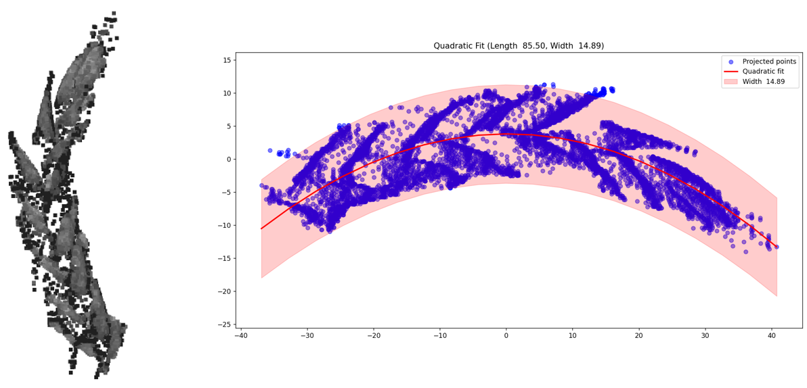
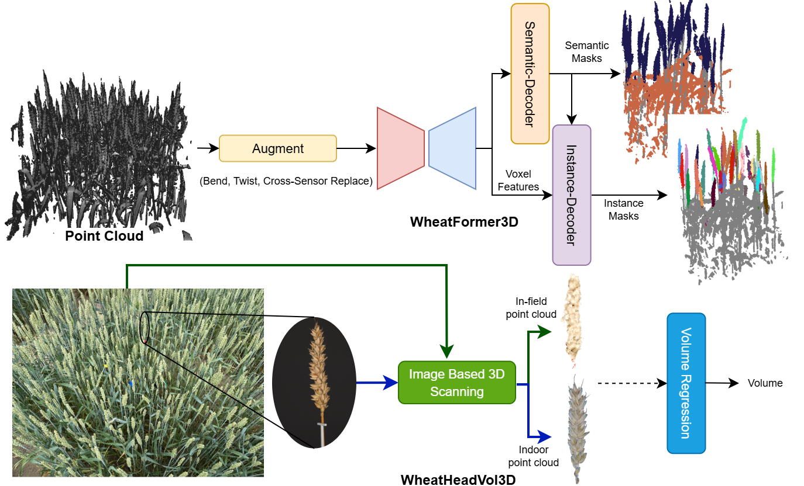
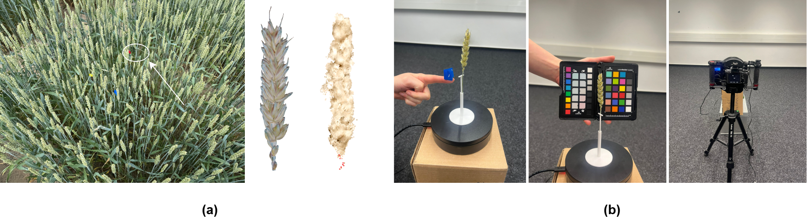

Computer Vision powered Wheat Phenotyping
We developed a novel 3D instance segmentation model to analyze wheat plant structures from point cloud data. Our method achieves state-of-the-art accuracy while being efficient enough for real-world deployment in agricultural settings. We create a novel volume estimation dataset for accurate wheat head volume estimation.
Problem Statement
Efficient agricultural practices can be greatly benefited by accurate phenotyping of crops, which involves measuring traits like size and volume of plant structures. Traditional manual phenotyping is labor-intensive and error-prone, while 2D image-based methods struggle with occlusions and complex geometries. We aim to develop a 3D instance segmentation model that can accurately identify and measure wheat heads from point cloud data, enabling high-throughput phenotyping for improved crop management and breeding.
Method Overview
We develop a transformer-decoder based architecture, WheatFormer3D, and domain specific augmentations for robust 3D instance segmentation. Our model is designed to be efficient and robust under annotation sparsity, making it suitable for real-world agricultural applications. We also create a novel volume estimation dataset, WheatHeadVol3D, and propose a regression-based approach for accurate volume estimation of irregularly shaped wheat heads.
Visual Results
3D Instance Segmentation Result
3D Semantic Segmentation Result

Wheat head size measurement

WheatFormer3D and WheatHeadVol3D pipelines.

3D scanning setup for wheat head reference volumes.
Quantitative Results - 3D Instance Segmentation
Average Precision (AP) metrics computed at various IoU thresholds. For the baselines, we report metrics that are evaluated with their official implementation. Prec50 and Rec50 are missing for Soft Group.
| Method | AP25 | AP50 | AP | Prec50 | Recall50 |
|---|---|---|---|---|---|
| WheatFormer3D | 91.19 | 87.96 | 77.99 | 96.14 | 85.38 |
| Oneformer3D | 80.52 | 76.48 | 65.63 | 96.55 | 73.93 |
| Oneformer3D-P | 85.99 | 78.21 | 63.24 | 93.87 | 72.87 |
| Mask3D | 82.31 | 76.06 | 63.41 | 92.89 | 83.99 |
| SoftGroup | 40.84 | 33.08 | 26.86 | - | - |
Quantitative Results - Volume Regression
Volume estimation metrics from WheatHeadVol3D test set for both pooling strategies, max-pooling and transformer-decoder. In-field: Samples from in-field scans of wheat plots. Indoor: Corresponding high-res indoor scans of wheat heads. MAE in cm3.
| Type | MAE | MAPE | ρ | |||
|---|---|---|---|---|---|---|
| In-field | Indoor | In-field | Indoor | In-field | Indoor | |
| Max-pooling | 1.35 | 0.22 | 18.19 | 4.26 | 0.72 | 0.99 |
| Transformer-decoder | 0.87 | 0.19 | 11.56 | 3.71 | 0.81 | 0.99 |
| Convex-hull | 26.39 | 10.20 | 380.16 | 187.75 | 0.45 | 0.97 |
Quantitative Results - Trait Analysis
Measurement results for length (L), width (W), volume (convex-hull) (V) and volume (regression model) (V2). MAE in cm for L and W and cm3 for V and V2. p-value ≪ 0.001 for all measurements.
| Score Threshold |
IoU | # Measured |
MAE | MAPE | ρ | |||||||||
|---|---|---|---|---|---|---|---|---|---|---|---|---|---|---|
| L | W | V | V2 | L | W | V | V2 | L | W | V | V2 | |||
| 0.3 | 0.3 | 291 | 0.98 | 0.13 | 1.77 | 0.29 | 9.61 | 9.99 | 24.17 | 14.69 | 0.85 | 0.54 | 0.73 | 0.78 |
| 0.5 | 0.5 | 273 | 0.89 | 0.11 | 1.57 | 0.26 | 8.66 | 9.00 | 22.59 | 12.80 | 0.86 | 0.57 | 0.75 | 0.82 |
| 0.7 | 0.7 | 234 | 0.80 | 0.08 | 1.23 | 0.24 | 7.48 | 5.82 | 13.66 | 11.20 | 0.88 | 0.62 | 0.87 | 0.84 |
Key Contributions
- Domain specific augmentations to simulate in-field/environmental conditions.
- First reference volume dataset for wheat heads, WheatHeadVol3D.
- Masked-FPS for more targeted query coverage.